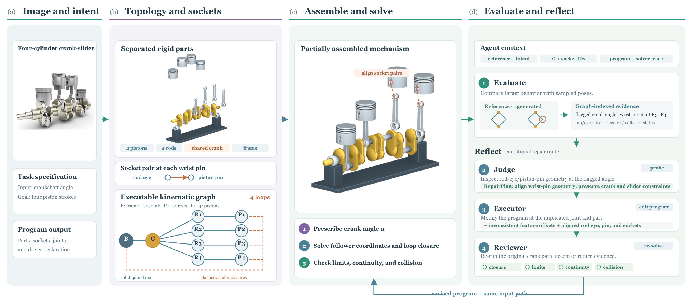

Construct the mechanism
The agent writes a program defining geometry, socket-bound connections, and motion relationships through a mechanism-authoring SDK.
Generating an articulated object from images and text requires more than plausible parts and movable joints: the assembled mechanism must execute the intended motion. We introduce MARC, Mechanism-Aware Reflective Correction, an agent framework that shares an executable kinematic graph across program construction, motion solving, and correction. Physical connections are bound to local attachment frames, while loop closures and joint-coordinate couplings describe how the parts move together. A numerical solver computes follower motion and associates anomalies with specific connections and configurations. The agent uses this information to probe possible causes, revise connections or geometry, and test the mechanism again. On a 20-object test set, MARC with Kimi-K3 achieves 67.8% valid motion coverage and 60.0% overall success. Starting from the same initial candidates, reflective correction improves these scores by 13.7 and 20.0 percentage points, respectively.
Construction, motion solving, and correction in 90 seconds.
Motion errors point back to the connections and geometry the agent can edit.
MARC represents rigid bodies, physical connections, loop closures, and coordinate couplings in one executable kinematic graph. Each connection is bound to local attachment frames, or sockets, so its geometric location stays explicit throughout construction, numerical execution, and correction.

The agent writes a program defining geometry, socket-bound connections, and motion relationships through a mechanism-authoring SDK.
A numerical solver computes follower motion from prescribed driver inputs, recording anomalies at the bodies, joints, and sockets involved.
The agent probes possible causes, coordinates edits to connections and geometry, and reruns the complete mechanism along the original motion paths.
Connection and coupling behavior in a generated dual-head lamp.
As the lamp extends, its crossing links and pivots must stay connected. Compare how the generated assemblies respond to their control inputs.
Separate outputs with the same backbone. Recorded native-control states are aligned by sequence progress.
Compare all seven methods →Closed chains, transmissions, and everyday articulated objects.
From the same initial candidates, more mechanisms complete their prescribed motion.
+13.7 percentage points
+20.0 percentage points
Valid motion coverage measures the proportion of prescribed samples reached while satisfying connection, joint-limit, and collision criteria. Overall success additionally requires the critical structural and motion requirements and complete valid sampled coverage.
Preprint citation. The arXiv identifier and link will be added when available.
@misc{yang2026marc,
title = {{MARC}: Mechanism-Aware Reflective Correction
for Articulated Object Code Generation},
author = {Xiong Yang and
Jinkun Hao and
Zijian Xiao and
Zipeng Ye and
Yuchen Xie and
Ran Yi},
year = {2026},
note = {Preprint}
}